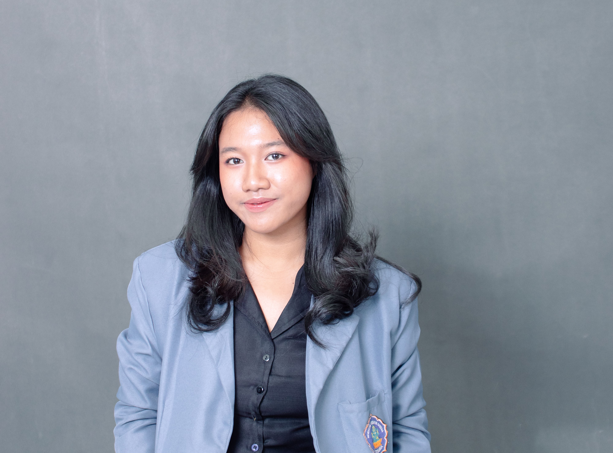
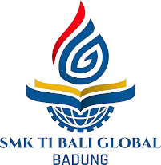
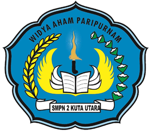
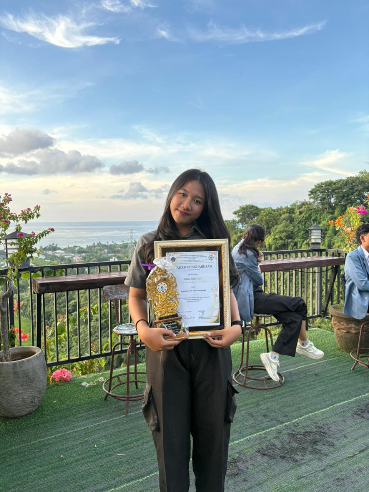
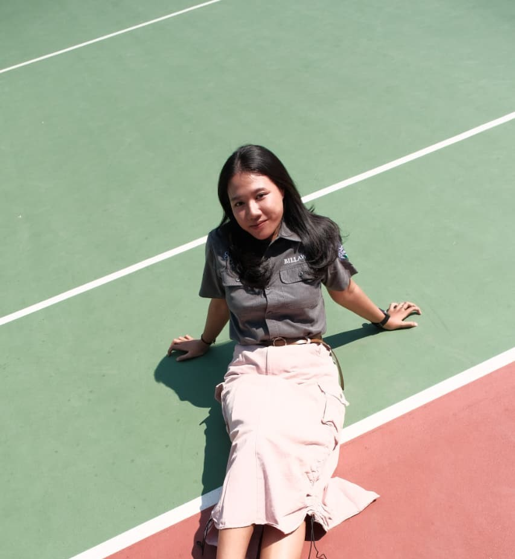

2024 - Sekarang
Universitas Pendidikan Ganesha
S1 Ilmu Komputer
Perguruan Tinggi
HALO, SAYA 👋
Saya adalah mahasiswa Ilmu Komputer yang memiliki ketertarikan pada UI/UX Design, Web Development, dan teknologi.

Computer Science Student
ABOUT ME
Sedikit cerita tentang saya dan ketertarikan saya.
Computer Science Student
Saya merupakan mahasiswa Ilmu Komputer yang memiliki ketertarikan pada dunia teknologi, khususnya dalam bidang UI/UX Design dan Web Development.
Saya senang mempelajari hal-hal baru dan mencoba menerapkannya melalui berbagai project. Bagi saya, teknologi bukan hanya tentang bagaimana sebuah sistem bekerja, tetapi juga bagaimana sistem tersebut dapat memberikan pengalaman yang baik bagi pengguna.
Pendidikan
Ilmu Komputer
Fokus
UI/UX & Web
MY EDUCATION
Perjalanan pendidikan saya dari sekolah dasar hingga menempuh pendidikan di perguruan tinggi.
S1 Ilmu Komputer
Perguruan Tinggi

Jurusan Multimedia
Sekolah Menengah Kejuruan

Sekolah Menengah Pertama
Sekolah Dasar
MY PROJECTS
Beberapa project yang pernah saya kerjakan selama mempelajari teknologi dan desain.
UI/UX DESIGN
Konsep aplikasi pet sitting yang membantu mahasiswa menemukan layanan penitipan hewan yang aman dan terpercaya.
UI/UX DESIGN
Prototype website untuk mendukung pengelolaan sampah organik dan pemanfaatan teba modern di lingkungan masyarakat Bali.
WEB DEVELOPMENT
Website portofolio pribadi yang dibuat menggunakan HTML dan Tailwind CSS dengan desain responsif.
WEB DEVELOPMENT
Prototipe aplikasi e-commerce berbasis React dengan katalog produk, detail produk, keranjang, checkout, pengelolaan produk, dan manajemen pesanan.
JAVASCRIPT TASK
Tambahkan tugas yang ingin kamu kerjakan.
EXPERIENCE
Beberapa pengalaman saya selama aktif dalam organisasi di lingkungan kampus.

Study Club FTK Undiksha
Berperan dalam membantu kegiatan unit kewirausahaan serta ikut mengembangkan ide kreatif dan program kerja organisasi.

Study Club FTK Undiksha
Membantu ketua dalam mengoordinasikan kegiatan, mendukung setiap bidang, serta memastikan program kerja Study Club berjalan dengan baik.
LET'S CONNECT
Jangan ragu untuk menghubungi saya untuk berdiskusi atau berkolaborasi dalam sebuah project.
Hubungi Saya